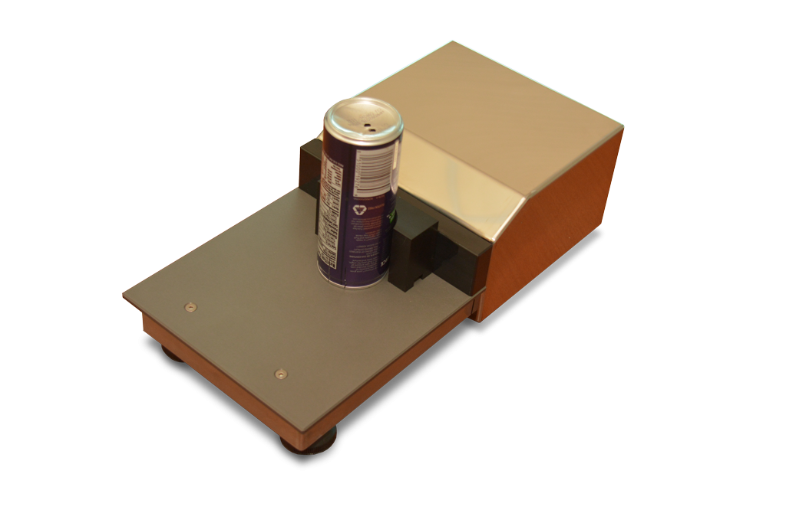

Medição Computadorizada de Recravação Dupla
A medição computadorizada (destrutiva) da recravação dupla existe desde a década de 1990. A primeira empresa a produzir um sistema automático de inspeção de recravação dupla foi a "Indel" (agora Quality By Vision), que introduziu o software original SEAMetal X DOS na exposição METPACK de 1993.

Os sistemas modernos de inspeção de recravação dupla, por exemplo, o recentemente anunciado SEAMetal 6 para Windows 10, são extremamente flexíveis e avançados. Eles são capazes de registrar dados, bem como prever tendências e identificar as causas raízes dos problemas.

Os custos da inspeção automática da recravação dupla finalmente os tornaram disponíveis para todos, incluindo menores empresas de bebidas e cervejarias artesanais que agora podem instalar esses sistemas facilmente e também integrá-los.
Sistemas modernos como o SEAMetal 6 devem ser capazes de ser flexíveis sobre como o cliente decidiu medir suas recravações - em qual ordem tudo é medido, quem pode modificar o quê, personalização de relatórios, CEP (Six Sigma) e corrigir erros do operador sem compromissos.